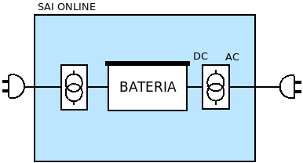
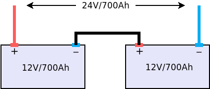

9.2. SAI¶
Un SAI (o UPS, si utilizamos las siglas en inglés) es un dispositivo que permite proteger a los equipos conectados a través de él de irregularidades en el suministro eléctrico, como es el caso de los apagones gracias a las baterías que incorpora, En consecuencia, el servidor no llega a apagarse y puede continuar dando servicio durante el corte y tras éste, si el corte no supera el tiempo de la batería. Obviamente, las baterías serán capaces de alimentar sólo durante un tiempo limitado a los dispositivos que se alimentan a través del SAI, por lo que si el apagón se prolonga demasiado, será inevitable que el servidor acabe apagado.
Adicionalmente a esta función principal, son capaces de comunicar a un ordenador cuál es su estado (usando las baterías, a punto de agotar la carga de las baterías, etc.), lo que permite disponer un software en éste que defina qué hacer en cada caso. Por ejemplo, cuando falte poco para agotar las baterías, lo más juicioso es apagar el ordenador para que, ya que se acabará apagando, al menos que se apague de forma ordenada evitando la corrupción del sistema de ficheros.
9.2.1. Introducción teórica¶
9.2.1.1. Anomalías en el suministro¶
Ya se ha establecido que la función principal de un SAI es combatir los fallos en el suministro, de los cuales pueden distinguirse nueve distintos:
Anomalía |
Descripción |
Efecto |
Causas frecuente |
|
|---|---|---|---|---|
1 |
Corte (o apagón) |
Interrupción total del suministro. |
|
|
2 |
Microcorte |
Bajada momentánea de tensión durante un breve tiempo (pocos ms) por debajo del 90% de la tensión nominal. |
|
|
3 |
Pico de tensión |
Subida momentánea de tensión durante un breve tiempo (pocos ms) por encima del 110% de la tensión nominal. |
|
|
4 |
Bajada de tensión |
Bajada sostenida de la tensión a partir del minuto. |
|
|
5 |
Subida de tensión |
Subida sostenida de la tensión a partir del munuto. |
|
|
6 |
Ruido eléctrico |
Distorsión de la señal generada por interferencias eléctricas o magnéticas. |
|
|
7 |
Conmutación transitoria |
Pequeña bajada de tensión del orden de nanosegundos. |
|
|
8 |
Variaciones de frecuencia |
Alteración de la frecuencia de 50 Hz. |
|
|
9 |
Distorsión armónica. |
Cambio en la forma sinusoidal de la onda por adición de frecuencias múltiplo de la original. |
|
|
Es obvio que un SAI siempre es capaz de proteger del primer tipo de anomalía (el apagón). Del resto de anomalías protegerá dependiendo de cuál sea tu tipo.
9.2.1.2. Tipos¶
Hay tres tipos de SAI:
- Offline
Es aquel que proporciona energía de sus baterías sólo mientras dure la interrupción del suministro eléctrico. En condiciones normales, los dispositivos que lo usan reciben corriente directamente de la red eléctrica, por lo que presenta dos grandes incovenientes:
Sólo es capaz de proteger de los tres primeros tipos de anomalía.
Cuando falla el suministro de red, existe un tiempo mínimo de conmutación para que sean las baterías las que se hagan cargo de suministrar la energía, por lo que en la práctica no proporcionan un suministro ininterrumpido. Es decir, en estos SAIs, un fallo de tipo 1, se traduce en fallo de tipo 7. Lo conveniente es que este tiempo sea menor a los 5 ms, tiempo que son capaces de tolerar los ordenadores habituales.

- Online
En ellos se toma el suministro de red y se convierte en corriente continua para cargar la batería, y de ésta se toma corriente continua que se vuelve a convertir en alterna para alimentar a los dispositivos conectados. Esta solución evita los nueve tipos de anomalías y no genera ningún problema en la conmutación, porque de hecho es inexistente.
El problema de esta solución es que es muy cara.
- Inline o interactivo
Funcionan como los SAI offline, pero añaden un transformador que corrige los siete primeros tipos de anomalías (las cinco primera siempre y la sexta y la séptima muy habitualmente). y que durante la conmutación es capaz de mantener la tensión.

La gran ventaja de esta solución frente a la anterior es que es mucho más barata, por lo que la mayoría de los SAI para el mercado no profesional utilizan este diseño.
9.2.1.3. Características¶
En la elección de un SAI hay diversos factores a tener en cuenta:
- Tipo
El tipo discutido bajo el epígrafe anterior.
- Factor de forma
Refiere la forma externa del SAI, de la que podemos distinguir dos tipos:
Torre, cuyas medidas dependenrán del modelo de SAI.
Enrackable, que son aquellos SAI pensados para disponerlos dentro de un rack (o bastidor). Tienen interés cuando ya se tiene un bastidor en que se albergan servidores y dispositivos de red.
- Potencia aparente (S)
Es la potencia máxima consumida por el SAI de la red y que suele ser con la que el fabricante lo caracteriza. Se mide en VA. Esta, sin embargo, no coincide con la potencia útil capaz de sumnistrar a los dispositivos, medida en vatios (W).
- Potencia (P) / factor de potencia (\(\cos \phi\))
Es la potencia útil que el SAI es capaz de suministrar a los dispotivos conectados a él. Alternativamente, el fabricante puede proporcionar el factor de potencia:
\[P = S * \cos \phi\]- Baterías
Conocer las características de las baterías que incorpora, es indispensable para estimar durante cuánto tiempo podrá alimentar el SAI a los dispostivos después de un corte de suministro. Por lo general:
Se usan baterías SLA, o sea, baterías selladas de ácido-plomo.
El voltaje es de 12V.
Tienen distintas capacidades (5Ah, 7Ah, 9Ah). Lo normal es que un SAI de mayor potencia, tenga una batería de mayor capacidad o varias conectadas en serie, lo cual supone sumar sus voltajes:
En principio, no parece haber un estándar sobre sus dimensiones, pero los fabricantes tienden a hacerlas con los mismos tamaños y los SAIs comerciales a montar baterías con estas dimensiones. Lógicamente, a mayor capacidad, mayor tamaño.
Advertencia
El componente más frágil de un SAI es la batería y es más que común que, cuando un SAI deja de funcionar, lo haga porque la batería haya completado su vida útil. En este punto, lo que hay que hacer es confirmar que la culpable es la batería y, si es así, cambiarla por una batería de idénticas dimensiones, lo cual suele ser bastante sencillo y económico.
- Monitorización
Un SAI puede permitir o no su monitorización a través de un puerto serie, un puerto USB o la conexión a red. Si nuestra intención es proteger al equipo de irregularidades en el suministro exclusivamente, o bien, asegurarnos de que ante un corte no perderemos el trabajo que estamos haciendo en nuestro equipo, la monitorización es irrelevante. Sin embargo, si el equipo es un servidor, es fundamental que el SAI sea monitorizable, ya que en ese caso podrá avisar al servidor de que su batería está próximo agotarse y este podrá tomar la decisión de apagarse ordenadamente.
9.2.2. Estimaciones¶
Dos son las estimaciones que nos puede interesar hacer al adquirir un SAI:
De cuánta potencia se adquiere.
Cuánto durará en modo batería.
9.2.2.1. Potencia necesaria¶
Para calcular el SAI basta con:
Sumar todas las potencias de los aparatos que conectaremos a través del SAI.
Tener presente que deberemos pasar las potencias expresadas en watios a VA utilizando el factor de potencia que proporcione el SAI.
Que la suma de las potencias no supere el 70% de la potencia del SAI.
Basándonos en estas reglas, supongamos que deseamos comprar un SPS ONE (Ficha) para soportar un monitor que consuma 30W, unos altavoces de 20W y una torre cuyo consumo puede estimarse en 220W:
Como en la ficha de estos SAI se proporcionan directamente los valores de la potencia activa, se puede elegir directamente el adecuado: el SPS 900 ONE de 900 VA (o también el SPS 700 ONE que está muy poco por debajo de esa potencia).
Nota
En este caso, las potencias de los aparatos para el cálculo deben ser las máximas.
9.2.2.2. Autonomía¶
Para conocer cuánto tiempo será capaz el SAI de mantener encendidos los dispositivos que se alimentan a través de él, es preciso conocer cuánta potencia consumen. Conocida esta potencia, toca obtener las características de las baterías:
Tensión, típicamente de 12 voltios.
Capacidad, medida en Ah (Amperios-hora).
Eficiencia, que para las baterías de ácido-plomo, típica en los SAI podemos estimar del 80%.
El SAI puede tener varias baterías dispuestas en serie. La fórmula general para obtener (en minutos) la autonomía del SAI es:
Por ejemplo, para un SAI que sólo dispone una batería de ácido-plomo, de 7 Ah de capacidad y 12 voltios de tensión; y que está conectada a un servidor con poca carga que consume unos 40W de potencia la autonomía en minutos es:
Nota
En este caso, sin embargo, para el cálculo de la autonomía, lo más lógico es utilizar las potencias que normalmente consumen los dispositivos, no las máximas.
9.2.3. Configuración¶
Los SAIs cumplen su función de defensa sin necesidad de configuración alguna, ahora bien, si queremos que los equipos atiendan sus alarmas y obren en consecuencia, sí es preciso configurar el servidor. Es común que para este propósito el propio SAI proporcione software, incluso con versión para Linux, pero lo conveniente es procurarse uno para el que tenga soporte Nut, que tiene paquete en las principales distribuciones.
Por lo general, los SAIs disponen de un conexión serie o USB a través de la cual pueden conectarse a un equipo que recibe los avisos en sus cambios de estado, al que denominaremos maestro. Las dos supuestos que estudiaremos son:
El SAI sólo proporciona protección al equipo con el que se comunica (maestro).
El SAI proporciona protección al maestro y a uno o varios equipos adicionales (esclavos).
9.2.3.1. ¿Qué SAI configuramos?¶
Utilizaremos un Salicru SPS 500 ONE del que el enlace proporciona alguna información y un manual con información técnica bastante relevante, como que el modelo de 500 VA incorpora una única batería de 4,5 Ah1.
Advertencia
Si no dispone de SAI alguno, aún puede probar la configuración.
9.2.3.2. Maestro¶
En el maestro, tras llevar a cabo su alimentación a través del SAI y conectarlo por USB, necesitamos instalar dos servicios diferentes:
nut-server, que se encarga de atender las comunicaciones del SAI y generar mensajes que es capaz de procesar el servicio de monitorización.
nut-client, que monitoriza los mensajes de nut-server y permite definir las acciones que queremos llevar a cabo en base a ellos.
Para hacerlo basta con instalar el metapaquete nut:
# apt install nut
Los ficheros de configuración se encuentran todos dentro de /etc/nut y
es dentro de ese directorio donde tenemos que hacer todos los cambios.
En nut.conf es preciso indicar en qué modo actúa el servidor:
MODE=standalone # Para el primer caso (sin esclavos)
#MODE=netserver # Para el segundo caso (con esclavos)
En ups.conf debemos definir cuál es el SAI que configuramos. Para un
Salicru SPS One, por ejemplo:
[salicru]
driver = blazer_usb
port = auto
desc = "Salicru SPS One 900VA"
«salicru» es el nombre que le hemos adjudicado a nuestro SAI: podemos escoger
cualquier otro. Es preciso editar upsd.conf para indicar en dónde
escuchará el servidor:
LISTEN 127.0.0.1 3493 # Para modo standalone (primer caso)
#LISTEN 0.0.0.0 3493 # Para modo netserver (primer caso)
Además, es preciso definir los usuarios con permisos en upsd.users:
# Administrador con capacidad para configurar opciones
[ædmin]
password = secretpass
actions = SET
instcmds = ALL
# Usuario que es capaz de monitorizar
[monuser]
password = secretpass2
upsmon master
upsmon slave # Sólo necesario en el caso 2.
Con estas acciones, habremos configurado completamente el servidor. Ahora bien,
en el propio maestro debe actuar también el cliente monitor, de modo que
configuraremos el fichero upsmon.conf:
MONITOR salicru@localhost 1 monuser secretpass2 master
# Comando que queremos que se ejecute al producirse
# alguna notificación por parte de nut-server
NOTIFYCMD /usr/local/bin/notifyme.sh
# Modificamos algunos mensajes de aviso
NOTIFYMSG ONLINE "SAI '%s' recibe alimentacion"
NOTIFYMSG ONBATT "SAI '%s' usa la bateria"
NOTIFYMSG LOWBATT "SAI '%s' tiene muy poca carga de bateria"
NOTIFYMSG FSD "SAI '%s' ordena el apagado"
NOTIFYMSG COMMOK "Se ha establecido comunicacion con SAI '%s'"
NOTIFYMSG COMMBAD "Se ha perdido comunicacion con SAI '%s'"
NOTIFYMSG SHUTDOWN "SAI '%s' comienza su propio apagado"
NOTIFYMSG REPLBATT "La bateria de SAI '%s' debe reemplazarse"
NOTIFYMSG NOCOMM "SAI '%s' no esta disponible"
# Qué hacer ante un aviso (los no definidos son SYSLOG+WALL)
NOTIFYFLAG ONLINE SYSLOG+WALL+EXEC
NOTIFYFLAG ONBATT SYSLOG+WALL+EXEC
NOTIFYFLAG LOWBATT SYSLOG+WALL+EXEC
NOTIFYFLAG NOCOMM SYSLOG
NOTIFYFLAG NOPARENT SYSLOG
NOTIFYFLAG REPLBATT SYSLOG+EXEC
Esta configuración requiere explicación:
MONITORindica cómo conectar con el SAI.NOTIFYCMDes la orden que se ejecutará al comunicat nut-server alguno de los eventos. El script sólo se ejecuta para aquellos avisos marcados conEXECy deberemos escribirlo nosotros sabiendo que tiene definida la variable de entorno NOTIFYTYPE con el tipo de evento y que su primer argumento es el mensaje indicado enNOTIFYFLAG. Un script que mande un mensaje de correo al administrador2, puede ser este:#!/bin/sh USUARIO="root" echo " From: root@localhost To: $USUARIO Subject: Mensaje del SAI - $NOTIFYTYPE $*" | /usr/sbin/sendmail -t
Los
NOTIFYMSGtraducen los mensajes en inglés predeterminados para cada tipo de evento.Los
NOTIFYFLAGdefinen cómo se trata cada tipo de evento:Si es SYSLOG, se escribe en el fichero de registro el mensaje. Para consultar con posterioridad todos los mensajes del monitor puede usarse la orden:
# journalctl -u nut-monitorSi es WALL, se escribe el mensaje en el sistema (aparecerá en la consola a todo usuario que esté conectado).
Si es EXEC, se ejecutará el script definido con
NOTIFYCMD.Si es IGNORE, que es incompatible con los otros tres, no se hará absolutamente nada.
Una vez establecida la configuración es necesario reiniciar ambos servidores:
# invoke-rc.d nut-server restart
# invoke-rc.d nut-client restart
y podemos comprobar el estado del SAI con la orden:
# upsc salicru@localhost
battery.charge: 100
battery.voltage: 13.60
battery.voltage.high: 13.00
battery.voltage.low: 10.40
battery.voltage.nominal: 12.0
device.type: ups
driver.name: blazer_usb
driver.parameter.pollinterval: 2
driver.parameter.port: auto
driver.parameter.synchronous: no
driver.version: 2.7.4
driver.version.internal: 0.12
input.current.nominal: 1.0
input.frequency: 50.1
input.frequency.nominal: 50
input.voltage: 239.0
input.voltage.fault: 239.0
input.voltage.nominal: 230
output.voltage: 239.0
ups.beeper.status: enabled
ups.delay.shutdown: 30
ups.delay.start: 180
ups.load: 22
ups.productid: 5161
ups.status: OL
ups.type: offline / line interactive
ups.vendorid: 0665
Nota
Como el SAI altera los valores de estas variables (p.e. si se piede el suministro eléctrico el estado pasará a OB) es muy útil en estos casos la orden watch:
# watch -dn1 "upsc salicru@localhost | grep -E '^(battery|ups)\.'"
que mostrará solamente las variables battery.* y ups.* y refrescará automáticamente sus valores cada segundo.
Hay muchísimas otras variables que pueden consultarse en la documentación de Nut), pero de las que este SAI no informa. De entre las que devuelve son interesantes:
ups.status, que informa del estado en el que está trabajando la batería. Se encuentra en OL, es decir, recibiendo alimentación de la red. Si hubiera un apagón (o lo fingiésemos, desconectado el SAI de la red), pasaría al estado OB, es decir, usando la batería. Si la situación se prolongara en el tiempo, el estado pasaría a LB, es decir, batería baja, y es a partir de este estado que se envían las órdenes para que se apaguen ordenadamente los equipos.
Nota
Dependiendo del SAI, el estado LB está asociado a un nivel mínimo de carga, dado por la variable battery.charge.low, o un tiempo mínimo de autonomía dado por battery.runtime.low. Sin embargo, en este SAI no se informa de cuáles son esos niveles ni de cuál se usa. Simplemente, el SAI por un criterio que desconocemos exactamente alcanza el estado y envía tal información. En otros SAIs más configurables sí se nos podría informar e incluso se nos podría dejar alterar el criterio modificando el valor de la variable.
battery.charge, que informa de cuál es el porcentaje de la batería. En este caso, la batería se encuentra totalmente cargada. Si desconectaramos el SAI de la red.
ups.load, que informa de cuál es el porcentaje sobre la potencia total que representan las potencias de todos los dispositivos conectados a través del SAI. En este caso, es el 22%, lo que significa que si la potencia total que soporta el dispositivo es 240W, los dispositivos conectados están consumiendo unos 53W. Obviamente este porcentaje depende de cuál sea el trabajo que los dispotivos están realizando en cada momento, pero si estimamos cuál es la cifra en condiciones normales de trabajo, podemos sacar una buena estimación de la autonomía de la batería.
9.2.3.3. Esclavo¶
Un esclavo es un equipo cuya alimentación se realiza a través del SAI, pero que no recibe sus comunicaciones, ya que estas se llevan a cabo a través de USB con el maestro. Para que pueden acceder a tales comunicaciones, es necesario instalarle el monitor y hacer que este se comunique con el servidor del maestro.
Así, primero instalamos exclusivamente el cliente:
# apt install nut-client
indicar en /etc/nut/nut.conf que se trata de un cliente:
MODE=netclient
y, finalmente, configuar en /etc/nut/upsmon.conf el cliente monitor del
mismo modo que lo configuramos en el maestro, con la única diferencia de la
directiva MONITOR:
MONITOR salicru@192.168.0.2 1 monuser secretpass2 slave
suponiendo que 192.168.0.2 sea la IP del maestro. Todo lo referente a la monitorización en el maestro (como el script de aviso o la orden upsc), es aplicable al esclavo.
9.2.3.4. ¿Qué narices hago sin SAI?¶
Si no se dispone de un SAI, puede probarse la configuración gracias al driver dummy-ups. Basta con descargar un fichero que contiene los parámetros del router que pretendemos comprar. Por ejemplo, en esta página hay un par de ellos y definir el SAI del siguiente modo:
[dummy]
driver = dummy-ups
port = /usr/local/share/nut/SPS_One_700VA.dev
desc = "Salicru imaginario SPS One 700VA"
donde port indica la ruta donde hemos guardado el fichero. La restante configuración es idéntica a la hecha para cuando el SAI es real.
El driver relee el fichero cada cierto tiempo con lo que tenemos dos opciones si queremos simular que nuestro SAI imaginario cambia su estado:
Una engorrosa que consiste en alterar directamente el fichero.
La recomendable que consiste en alargar el tiempo de relectura del fichero (a 5 minutos, por ejemplo):
# echo "TIMER 300" >> /usr/local/share/nut/SPS_One_700VA.dev
y usar el comando upsrw para alterar sobre la marcha los valores:
# upsrw -s ups.load=15 -u admin dummy
que nos pedirá la contraseña del usuario admin que definimos anteriormente con permisos para alterar variables. Durante cinco minutos podremos ir haciendo cambios sin que el driver vuelva a recargar los valores originales del fichero. Incluso podemos simular que el SAI está en las últimas para que el ordenador tome la determináción de apagarse:
# upsrw -s ups.status="OB LB" -u admin dummy
9.2.4. Enlaces de interés¶
Notas al pie